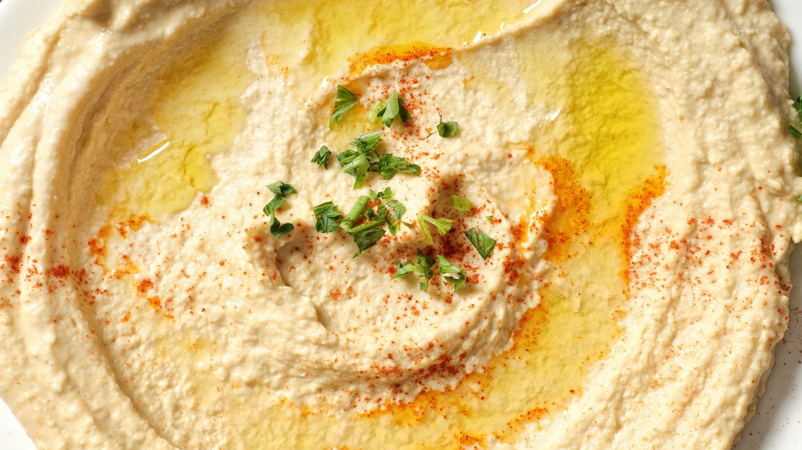

Hummus
Por Chef Vegano
DNI:12345678A
Ingredientes:
- Garbanzos cocidos:
200gramos
- Tahini:
1cucharada
- Limón:
1unidad
Preparación:
- Mezclar los garbanzos, tahini y jugo de limón en una procesadora.
- Procesar hasta obtener una textura cremosa.
- Servir con un chorro de aceite de oliva.